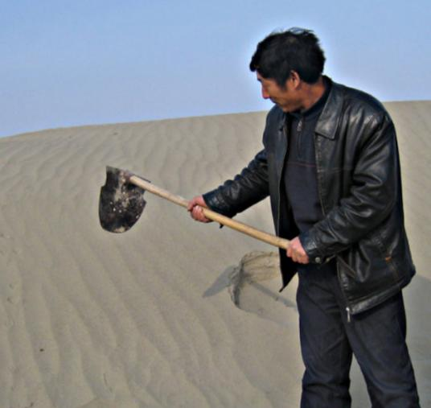
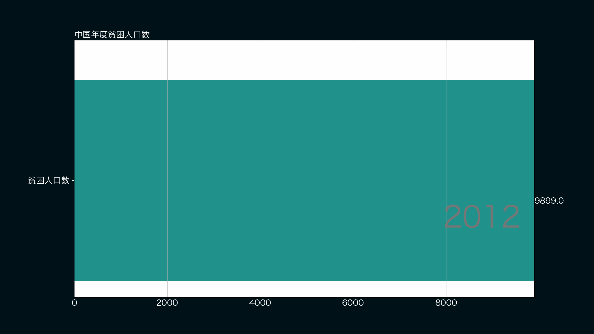
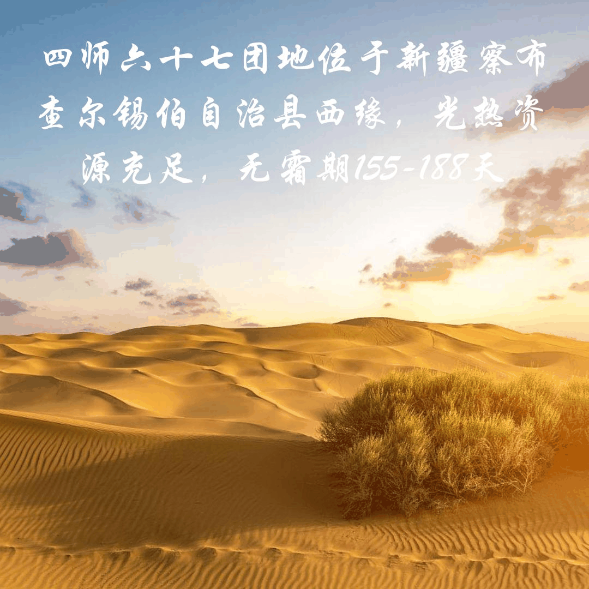
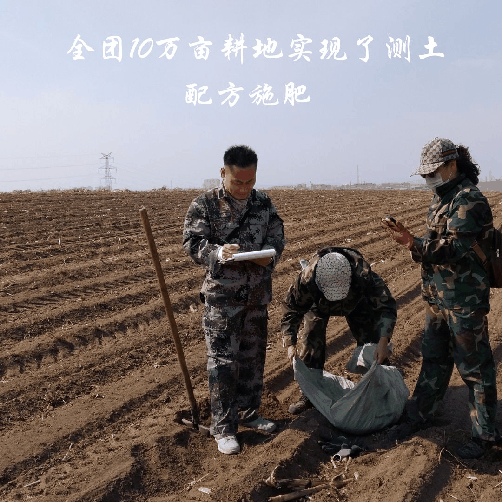
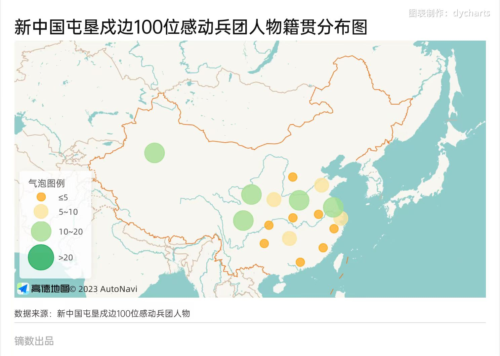

2023年9月，雷蒙多访华一事再次西北边境之城——新疆拉上热搜。同年9月中旬，借日本排放核污水一事，“新疆培育出三文鱼和大闸蟹”登上微博热搜。时间回到23年的春节，“疆域阿力木”爆火并持续走红，5月份《爸爸当家2》马里奥一家让新疆文旅热度再创新高……这个因偏远而存在感较低的宝地，正在重新焕发它的光芒。
西北明珠的灰尘正在被拂去
166.49万平方千米的土地面积，5600余千米的边境线，2587万人，超过十一种民族。新疆用它宽广的地域孕育了多样的民族和奇异的地形风貌。在过去，提到新疆，“贫穷”“混乱”“恶劣的气候”“偏远”“不适宜旅游”是非新疆人对新疆最大的印象。即使它有中国武侠小说圣地的昆仑山，神话体系中直达天堂的天山，靠积雪和冰川哺育的五百余条河流， 河流蜿蜒而产生的绿洲无数,“十里桃花万杨柳”的塞外风光在新疆再常见不过， 33.67 万平方千米的塔克拉玛干沙漠为中国提供了丰富的地貌，500多种的野生动物在此蓬勃生长，138 种矿产在地下等待挖掘，2.23亿的后备耕地在此静候开垦。
以2022年的数据为例，全疆规模以上工业增加值比上年增长7.1%，原油产量比上年增长7.5% ；天然气产量增长了4.9%；油气当量位居全国首位；而新疆棉花总产量达到539.06万吨，增长了 5.1%；新疆限额以上社会消费品零售总额增速也由负转正，同比增长11.4% 。经济，军事，科技，文旅，新疆人民正齐心协力的为新疆发展全面发力。西北镇守边境的“长城”越建越高，越建越牢固。
七十年前，王震在七届二中全会上主动请缨进军新疆，冒着风雨严寒翻越终年积雪的祁连山，直插张掖，解放酒泉，直逼新疆，促成新疆和平解放。但新疆自古以来便是以农牧业为主体的自然经济，几乎没有现代化工业，社会生产力水平低下，生产方式落后， 各族人民生活贫困……看到此场景，王震当机立断留在此地戍守边境，建设新疆。做决定的那晚，王震的梦里或可见新疆今日的改头换面，欣欣向荣。
赤色火种的播种人
“中国的地图本是一片秋海棠叶，因为外蒙古的独立而被咬去了一大块，现在我们还要愿意新疆这一块再丢掉吗？”过去三十余年间的阴谋与暴力给新疆留下的刻骨伤痕，让将士们面对解放新疆这一重任心存疑虑。低迷的士气来不及碰上新疆凌冽的风， 就被王震将军的一番肺腑之言扼杀在幼苗时期。为了破解将士们心中对新疆的恐惧和疑惑，王震请来了许多新疆本地的历史学家、商人以及维吾尔族朋友，给干部和士兵们讲解当地的风土人情。建设新疆的使命种子在这一刻就已经被王震栽种在每一个来疆的人心中。
1949年9月25日，春风吹遍玉门关，新疆迎来了和平解放。王震高兴之余，又清楚地明白新疆建设还有很长的路要走。面对叛乱和分裂势力，王震重拳出击，历经两年，终于在1951年4月29日解决了新疆稳定的心腹大患，这也为新疆的经济发展谋求了和平环境。 到1953年，新疆的工业生产总值约为1949年的36倍。王震为新疆战争创伤的修复呕心沥血，奔走东西，倾注了无数的血汗。
新疆不仅要稳定，还要发展。早在率部进疆时，王震就决定要在新疆发扬“南泥湾精神”，全体军人一律参加生产劳动。1950年1月23日，西北荒原屯垦戍边拉开序幕。王震要求每人要开垦6 亩荒地，当年要开垦荒地60万亩，要生产粮食5000万公斤，棉花180 万公斤，每人养1头羊，只鸡，10个人养1头猪、1头牛。仅1950年这一年，部队开荒种地5.58万公顷，实现全军粮食自给7个月。
为建设发展新疆工业，到1951年，王震号召全体官兵节省经费挤出的资金已经建成了10多个工矿企业，76 个作坊。也正是在此时，扎根新疆、建设新疆的种子深深种在了进疆同志们的心中。数据来源：吴跃农 《新疆和平解放及新疆军区生产建设兵团的诞生》
1950年7月，在三五九旅成长起来的张仲瀚进驻石河子，担任二十二兵团九军政委，并在石河子发挥贯彻王震的“南泥湾精神”。1952年10月，石河子落成了第一座行政办公大楼。1953年，王震调中央工作，暂离了新疆这个被他视为第二个故乡的热土，张仲瀚、陶峙岳接过了他手中的薪火，继续在这片土地深耕。
离开新疆的王震始终牵挂着他的第二故乡，他与王恩茂向中央建议成立新疆生产建设兵团。终于，1954年10月，“新疆军区生产建设兵团”宣告成立！自此，它负担起了屯垦戍边的历史使命，拉开了新疆现代化工农业发展的序曲。
王震建设新疆的种子同样种在了王恩茂的心里，在他离开新疆的岁月中，王恩茂继续将赤色的种子播撒在进疆建设的同志们心中。1993年4月5日，王震魂归新疆故土，永远地守卫着这片他种满赤色火种的大地。
新疆历任建设者领导：
1949年3月-1953年4月王震
1952年—1966年王恩茂
1981年-1984年王恩茂
1997年4月-2011年11月石书江
2011年--至今 后来的奋斗者们
赤色火种的播种人
1949年，在第一野战军第一兵团司令员兼政委王震的指挥下，王恩茂以二军政委身份与军长郭鹏率部进驻南疆，建党建政，从此与新疆结缘。王恩茂的回忆录曾写道：“我热爱新疆，热爱新疆各族人民，新疆是我的第二故乡。将来我死后，就埋在天山脚下。”
“兵无粮则散，民无粮则乱，我们要发挥南泥湾光荣传统，用坎土曼砸碎别人的预言。”广袤无垠的荒原上，王恩茂带领着十万解放军战士扛着坎土曼，走上开荒这个新的战场。王恩茂既是指挥者，也是拓荒者，他与战士们一同挥起坎土曼开荒种地，鸡未鸣，狗未吠，早起晚睡，一日开荒16小时， 手掌心的水泡流出脓汁混着汗液从锄柄上缓缓流下。
1950年，1万军人投身于开荒屯垦的大生产运动，实际开垦荒地6．4万公顷，播种近5．53 万公顷，实现粮食自给7个月，蔬菜、油、肉全部自给。到1952年，全军播种面积达到11．07万公顷，粮食收成7.5 亿，开荒播种800万亩，实现主副食全部自给，并建立起一批军垦农场。
在全团战士的努力下，新疆这片原始而富有野性的土地已被成功收服。但如何治理新疆这个新问题，成了一根梁子，横在王恩茂心里。“没有一支德才兼备的少数民族干部队伍，就没有新疆的长治久安”，在王恩茂的争取下，中央党校以及一些部属院校相继开设新疆班，为新疆培训少数民族干部。王恩茂对少数民族干部十分关心，其子王北会回忆道：“20世纪60年代初正是三年经济困难时期， 为了照顾新疆少数民族干部的生活习惯，父亲专门安排，从新疆调运了两群活羊在北京饲养，使他们的生活改善有了保障。”此外，王恩茂注重在实践中发现、选拔少数民族干部，不放过任何一根好苗子，重点培养，大胆使用。铁木尔·达瓦买提是土改中涌现出的一名优秀基层干部，王恩茂亲赴托克逊县实地考察，不久，27岁的铁木尔·达瓦买提被提拔为托克逊县县长，时隔多年，已经担任了 全国人大常委会副委员长的铁木尔·达瓦买提说起王恩茂，仍心存感激，称王恩茂是他的伯乐、导师和引路人。曾任自治区党委常委、自治区政协副主席、自治区党委农工部部长等职务的司马义·牙生诺夫则将他视为兄长和良师益友，终生保持着联络与友谊。
轮台东门送君去，去时雪满天山路。千年前，岑参在茫茫大雪中送武判官归京；千年后，那一抹残影站在路中央注视着一抹红骑向西而去。
那年，王恩茂去南疆调研，被风雪打磨的轮台古城随着车辆的不断前行出现在他眼前。王恩茂向司机示意，打开车门，下车走到一堵残垣断壁前，说：“汉代的官吏班超，在新疆待了30年，68岁时经过轮台回长安；我68岁重返新疆，走的是同一条路，但方向不同。我们是共产党人，我愿意为新疆各族人民服务终生，将来我死后要埋在天山脚下。”2001年4月12日，王恩茂逝世，他的骨灰被安葬在乌鲁木齐公墓。 一个多月后，中央扶贫开发工作会议召开，指出在20世纪末，基本解决农村贫困人口温饱问题的战略目标已经实现。
点燃原野的守望人
当昔日的种子生长成参天大树，在赤色的树荫之下，有一个名字嵌入了每一寸泥土，那就是石书江。这位普通却并不不平凡的人，用他的智慧和汗水，改写了新疆兵团第四师六十七团这片贫瘠的土地的命运。
四师六十七团地位于新疆察布查尔锡伯自治县西缘，光热资源充足，无霜期155-188天，土地总面积6.08万公顷，耕地面积4.63千公顷。但由于其地处戈壁，水资源匮乏，降水少，地表仅有伊犁河水和山溪雪水可供利用；土壤贫瘠，土层薄，水土流失严重，发展农业并非易事。为解决这些“瓶颈”，石书江从转变传统灌溉方式入手，积极推广沟灌、喷灌、滴灌技术，大力发展节水农业。在他的努力下，每亩地用水量从 500立方米降至100立方米。这不仅仅是数字的变化，更是对稀缺资源的高效利用。就像一位“水的魔术师”，他让这片干旱的土地重新焕发出生机与绿意。
“节约一滴水，多一份希望。”这是石书江经常挂在嘴边的话。他明白，在这片古老而贫瘠的土地上，每一滴水都是生命的希望。因此，他亲自带队，用双脚丈量土地，跑遍了全团所有单位，推广节水技术。结果也确实令人振奋：全团10亩耕地实现了测土配方施肥，7万亩耕地采用了双膜覆盖，每亩地可节约成本200元人民币以上。
如果说节水农业是石书江改变团场命运的“先声”，那么经济的快速发展则是他最响亮的“战歌”。
在石书江的任期之内，耕地面积从1996年的3.45万亩增至2011年的12万亩，近乎翻了三倍。更令人瞩目的是，生产总值从1996年的 2715万元激增至2011年的2.3亿元。这是一串令人震撼的数字，更是一个划时代的变革。
让石书江最为自豪的，是职工人均收入的翻四番。从吃不饱穿不暖到“耕者有其田，行者歌于野”，从1996年的5434元增至2010年的24165元，人均收入跨越性的增长不仅改变了每个兵团职工的生活，更让整个团场焕然一新。
但石书江也深知，发展不能只是数字的增长，更要让每一个人都受益。他特别关注少数民族经济的发展，实施了一系列具有针对性的政策和措施。
2000多只“扶贫羊”、3万多只“融资羊”如同生活的“种子”，落入这片土地，开枝散叶，蓬勃生长。1940人因此受益，职工平均收入从1831元增至6345元。为了改善居住条件，他先后筹措资金9000万元，在团部建起二层商业楼18 幢、五层住宅楼15幢；在连队建成978套砖混结构的职工住房和604套外来工住房；改造团连营区道路53.2 公里，使团场面貌大为改观，提升了职工群众的幸福指数。这不仅仅是经济指标的提升，更是对少数民族文化和生活方式的尊重与推崇。
2011年11月，石书江，这位改变了一个团场命运的人，在出差途中不幸遭遇车祸殉职。1500多人自发前来悼念，烛光摇曳，堵塞汇满了整条街道。他虽然离开了，但他的事迹如同一首英雄的赞歌，永远镌刻在了这片土地之上，镌刻在了人们的心中。
以星火点燃原野，以涓滴引汇江河。虽然石书江告别了他奋斗半生的土地，但他的事迹依旧激励着后来的青年，矢志不渝地坚定前进。杜银娃、吐尔逊、林路基、周培之、仇素芹......乃至后来的感动兵团人物一代又一代人传唱着前辈的事迹与赞歌，将青春泼洒在茫茫的边疆戈壁之上，谱写一曲又一曲新的华章。
被吹动的云永保纯净，生命的火花永远炙热
斯人已逝，岁月不居。时间来到2011年，此时正值中国共产党成立90周年之际，为深入开展群众性爱国精神教育以及兵团精神教育，兵团及其相关部门组织开展了“新中国屯垦戍边100位感动兵团人物”活动，由群众广泛推荐选举。消息一出，众人奔走相告，围聚在一起讨论自己身边值得推选的人，街头，巷尾，村口的榕树下……纷至沓来的举荐跨过山水，递到了评选组的桌前。从报纸到网络信息投票，仅仅15天，评选组收到了513.33万张选票。历经层层筛选，最终，150位候选人脱颖而出。而他们的事迹，也逐渐展露在世人眼前。
在海拔近4000米的新疆伊犁西天山深处，每年冬天都会迎来一群哈萨克族牧民。从新疆生产建设兵团第四师七十八团驻扎地到100多公里外的草场，这一路走来，并不容易。由于战线长、路途险，团场在“冬窝子”必经之路上设立一些牧点，被称之为“点家”，哈萨克族党员努尔江·吾任太的家就是“点家”之一。他的家在距离团部以南60公里、海拔2300多米大山深处的阿尕西库拉，也被过往牧民称为高山牧道上补充给养的“兵站”。作为“点家”，努尔江一家并不富裕。在远离人世的草原深处，没有自来水，没有电，牧民过后，常常只剩下无声夜色。
“你既然选择留下，这么多年攒下的口碑，不能在你这里丢了，再辛苦都要坚持，不能辜负组织的期望，你要更好的为牧民们服务！”吾任太（努尔江之父）在努尔江提出接下他“点家之棒”的那一天对自己的儿子说到。1993年，努尔江正式成为“点家”负责人。26年来，努尔江坚守高山牧道，守护一方转场牧民和牲畜的安全。面对记者的提问，这个憨厚的哈萨克汉子只笑着摇摇头，早已不记得帮过多少人。多年来，努尔江坚持为贫困群众提供帮扶，除了给予资金资助，还定期送去面粉、清油，从不求回报，“我是从贫穷走过来的，我看不惯、看不得别人受穷。”努尔江说。
与努尔江不同，“40后”王孟筠早在年少时就进了兵团，深入前线。1952年3月，不满14岁的王孟筠，一心想参军进疆。刚到兵团时，在南方长大的王孟筠一时无法适应新疆寒冷的冬季，她患上了风湿病。7个月后，她因风湿被送入医院检查，这一检查才发现，王孟筠因风湿引起了淋巴腺炎、中耳炎、风湿性关节炎、头痛、牙痛等十五种疾病。
长久的病痛并未摧磨她建设新疆的决心。两年后，她出院回到了八一农场。但她的风湿总会在某一天的深夜让她痛入脊骨。病情的转机是在1960年，王震将军亲自安排王孟筠到气候温暖的湛江农垦局疗养。一次意外蜂蜇的经历，竟将折磨了她十年的病情减轻了，她失聪了十年的双耳重新听到了声音。从此王孟筠迷上了蜜蜂，并学习中医针灸学，成为了远近闻名的蜂疗专家，退休后仍热情地为慕名而来的求医者免费治病。1989年，湛江农垦干部疗养院成立蜂疗科，王孟筠成为专业的蜂疗医生。王孟筠就像一只辛勤的蜜蜂，为来自五湖四海的、难以数计的患者治疗风湿病，重新点燃他们的生命之火。
2022年的7月，一位维吾尔族的老人在病床上与世长辞，阖上了自己那精神了一辈子的眼睛。1936年，克力木·依莫拉洪在一个贫苦的家庭出生。14岁，他辍学参军，3年后退役到牧场工作。彼时，改革开放的步伐正不断加快，吐尔尕特口岸进出口贸易日益繁荣。克力木把握机遇，拿出多年积蓄，在吐尔尕特口岸开起了饭馆、商店、招待所，一家人的生活越过越富裕。
“是党的富民政策给了我致富的机遇，我又是一名老党员，哪里有困难，我就有责任尽一份力。”致富不忘感党恩，年少参军，放牧戍边,克力木·依莫拉洪虽然年龄小,一字不识,但凭借头脑灵活、踏实肯干,依靠党的富民政策,硬是在高原戈壁中闯出了一条致富路。“一个人富了不算富,大家富了才算富。”2003年,巴楚县琼库恰克乡发生强烈地震,克力木·依莫拉洪慷慨解囊,拿出1.7元购买5吨大米送给受灾群众。2004 年,他为印度洋海啸受灾群众一次性捐款1万元。2008年四川汶川地震,他主动捐款1万元。1999年,托云牧场遭到巨大洪水灾害,他主动捐款5000元,用于救助困难户。他还多次为托云牧场公益事业捐款,1998 年至今累计捐款6万余元。
未讲完的故事还有很多，在150位候选人以外的参与者，他们的人生何尝不是一曲又一曲赞歌，只恨时光与距离掩埋了一群又一群值得歌颂的英雄。但我们相信，新疆的今天一定会和先辈梦里期盼的样子一模一样。
结尾
在遥远的西北，有一行人穿过茫茫的风雪，披着漫天的星光，跨越时光，走过万里河山，去到了祖国的最边境。70年后的今天，他们的兵团军屯精神化作一颗子弹，携带着一代又一代的建设成果击中每一个青年人的眉心。